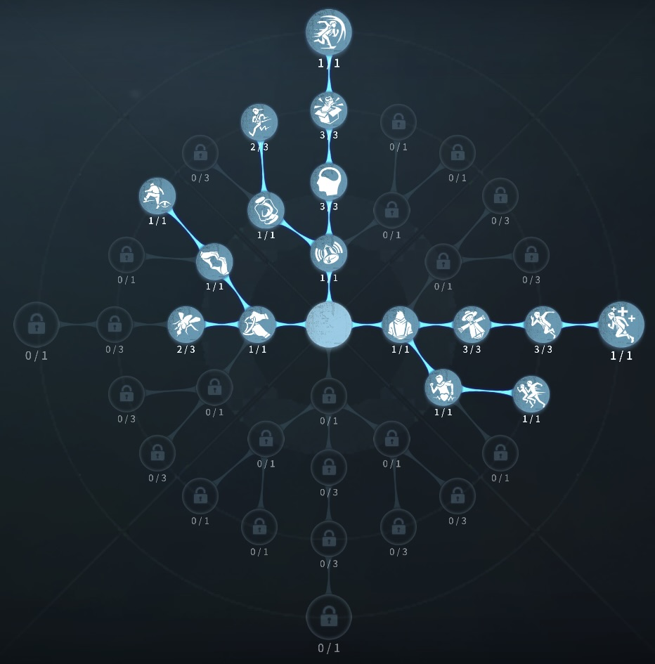
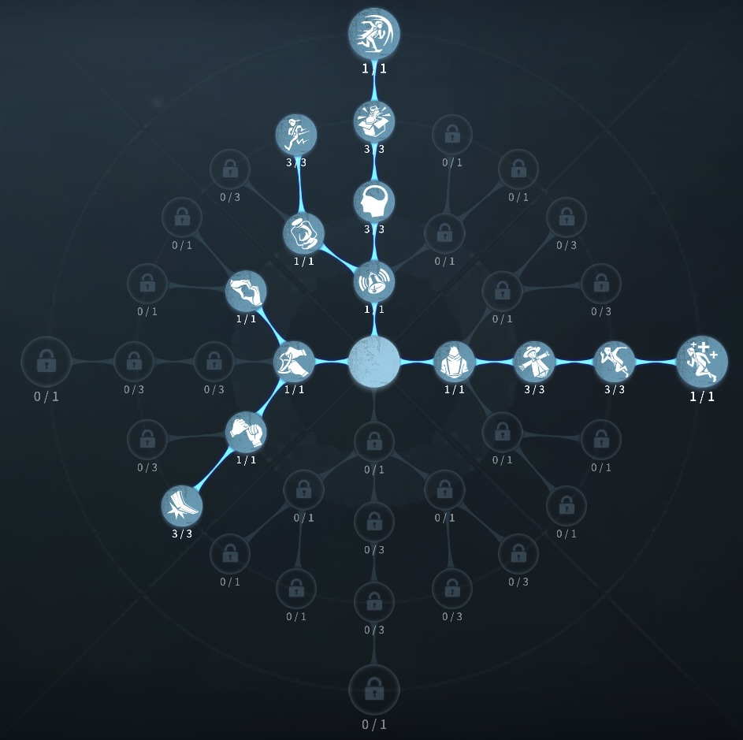

昆虫学者の評価
虫でハンターをとうせんぼ
外在特質と特徴
特質1:昆虫研究
・昆虫学者はワンタップでその場に虫を出すことができ虫でハンターを押しだしたり、長押しすると虫を身にまとい移動することができる。身にまとっている時は板窓操作はできない。・虫の群れは飛び道具を防ぐことができる。ハンターが虫の群れを通過するとき移動速度85％減少。ハンターは計2回攻撃すると虫の群れをクールタイムに入れることができる。
耐久消費：1%/秒
虫の群れが攻撃を受けた時の耐久消費：20％
操作切り替えクールタイム：3秒
虫の群れを散らすクールタイム：20秒
特質2:調整試薬
・板窓を乗り越えると、その後の乗り越えた板窓の乗り越え速度10％増加。 昆虫学者が脱落してもこの効果は持続する。特質3:香り
・18m以内のハンターの視界から隠れても2秒間位置が表示される。特徴
とにかく虫の練度と理解度が必要。無難に稼げる補佐チェイス型
虫によってハンタースキルを止められる。 （道化師ピエロのロケットダッシュ、リッパーの霧の刃、断罪狩人のチェーンクロウなど）
基本的な立ち回り方
1. 追われた時
移動する際は、虫に乗っての移動する。
必ず通らないといけないルートには虫を置きハンターを進行を妨害する。
また、虫は攻撃されると破壊されるので、ハンターが攻撃しそうな時には虫を乗り回収
するか虫を回収するかにしよう！
2. 追われない時
ゲーム開始時、虫を設置して、解読をしよう！
虫の近くにハンターがいる場合は補佐してあげるのも良い。
あまりやりすぎると、解読遅延にもつながるので、粘着のしすぎは厳禁
逆にハンタースキルを止められるハンターの時はスキルを止めてあげよう！
おすすめの内在人格
フライホイールチェイス型人格
この内在人格は、防衛反応と尻に火で板を強くし、感覚順応でハンターの動作を確認する人格

フライホイール板当て型人格
この内在人格は、怪力に振ることで虫を使って板当てを狙い、防衛反応でチェイスを高めた人格


みんなのコメント